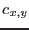
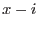

A cyclic convolution of an input image weighted by  gives output according to the following prescription:
gives output according to the following prescription:
where  is the convolver and
The indices  and are calculated modulo the image sizes  and
and  respectively, that is, they wrap around the image limits. This cyclic property is unavoidable if it is desired to make efficient use of the Fourier transform in performing the convolution. Potentially this is a nuisance because it means, for example, that values at the left-hand edge of the image can become mixed with values on the right-hand edge, and so forth. The task avoids this by padding the image with zero-valued pixels in both
respectively, that is, they wrap around the image limits. This cyclic property is unavoidable if it is desired to make efficient use of the Fourier transform in performing the convolution. Potentially this is a nuisance because it means, for example, that values at the left-hand edge of the image can become mixed with values on the right-hand edge, and so forth. The task avoids this by padding the image with zero-valued pixels in both  and
and  directions. The pad size is equal to the width of the convolver in that direction. If there are multiple convolvers (see sections 3.3.4, 3.3.5 and 3.3.6), the largest convolver sizes are used.
directions. The pad size is equal to the width of the convolver in that direction. If there are multiple convolvers (see sections 3.3.4, 3.3.5 and 3.3.6), the largest convolver sizes are used.
In fact the `blank space' areas around the edges of the image are handled in three steps, as below.
After the convolution is done, before the output is written to file, the process is reversed: the pad is first cut away, then the original amount of blank space is restored.
The convolution may be done either directly or via FFT. If left to itself, the task will try to use the method which is quickest. If the image is large and the number of convolvers small, this will generally be the FFT method; however direct convolution becomes more efficient if the image is divided into many small patches of different convolution. If the user desires the convolutions to be unilaterally performed using one method or another, they should make use of the forcecalctype and calcbyfft parameters.
The two methods produce identical outputs except for small differences caused by different propagation of rounding errors. However the FFT method will, because it always acts on the whole image, in general leave few if any pixels in the output which are exactly equal to zero. Use of a mask (section 3.4) or an exposure map (section 3.5) can be helpful in this instance.